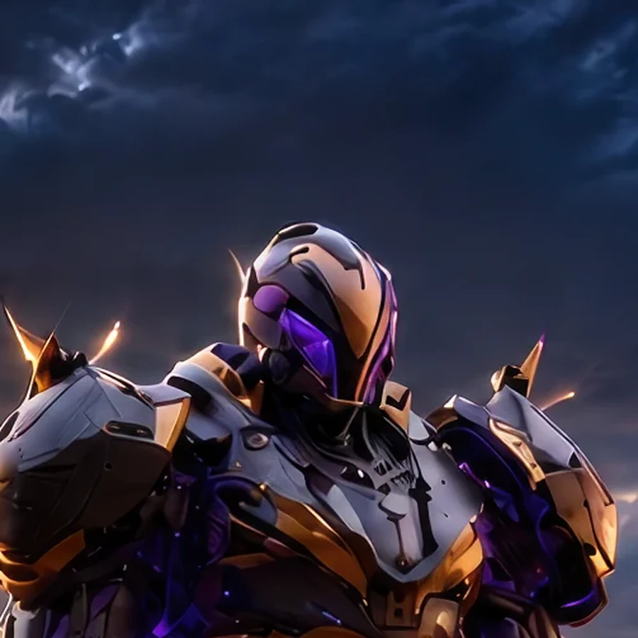
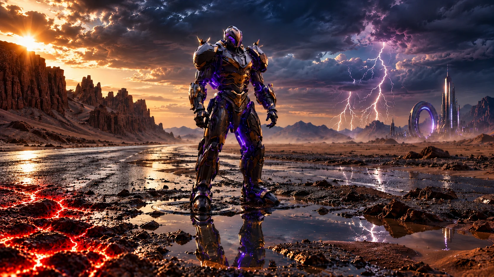
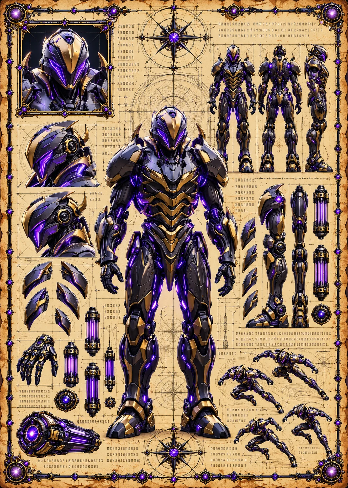

Field Observation
Moreno investigates a branching red glow embedded in the lower-left ground. The fissure suggests alien energy has penetrated Earth 1 terrain.
 ©
©
GENEZYS ARCHIVE · EARTH 1 · Legionnaire
Anomaly Shifter
Identity & combat record
Archive node 01 / 05

Archive record
Moreno sets traps in causality itself. The Feedback Spiral waits for the next enemy who uses a special against Moreno, and sends the consequence straight back. Every door has a keeper, the Custodians say, and Moreno is the lock.
Combat signature
Creates recursive causality trap: The next time enemy uses special skill against this card, that enemy suffers 150 pierce damage.
Genezys 07:06 ™&©2026LEGIONS
Recovered visual record
Archive node 02 / 05

Full frame available // rotate device to landscape
Technical archive
Archive node 03 / 05

Classified field intelligence
Archive node 04 / 05
FIELD REPORT // GROUND ANOMALY
Field Observation
Moreno investigates a branching red glow embedded in the lower-left ground. The fissure suggests alien energy has penetrated Earth 1 terrain.
Environment
Object Analysis
Key Findings
Motion archive
Archive node 05 / 05
Motion record not yet recovered